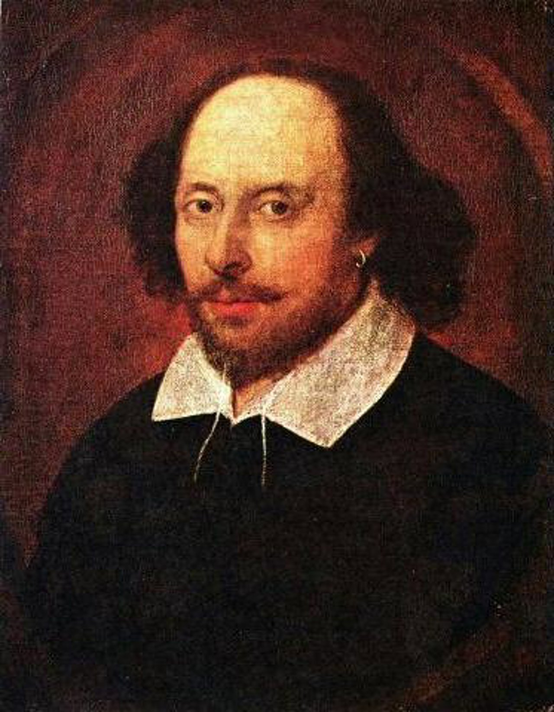

Autor
¿Quién es Shakespeare?
El escritor de Macbeth, William Shakespeare fue un poeta, escritor y dramaturgo inglés del siglo XVI. Es conocido por ser uno de los más importantes escritores de la literatura inglesa y uno de los más grandes escritores.
Shakespeare es considerado el autor de muchos de los libros más famosos de la literatura inglesa, como Romeo y Julieta, La Celestina, Hamlet, Macbeth y King Lear. También es el autor de la Epístola de la muerte de Lear, Hamlet y, el hoy analizado, Macbeth.
Una característica esencial en sus obras es la enseñanza inherente a ellas, por ejemplo, suele el poder devastador de la hibrys, el descontrol de los deseos del humano y lo importante que es el autocontrol para una correcta gestión del hombre.
Tipo de teatro
¿Qué es el teatro Isabelino?
Se le denomina teatro Isabelino al conjunto de obras teatrales que se escribieron durante el periodo del gobierno de la reina Isabel I de Inglaterra. En este grupo se destacan las creaciones de William Shakespeare.
Algunas de las características de este teatro son:
-
Popular. Destinado y accesible a un publico general.
-
Distintos géneros. En una misma obra se encuentran distintos géneros teatrales.
-
Alternaciones en la escritura. Cambios entre prosa y verso.
-
Heterogeneidad. Mezcla entre personajes nobles y plebeyos.
Macbeth
Personajes Principales:
-
Macbeth. Personaje principal de la obra, Varón de Glamis y futuro rey de Inglaterra.
-
Lady Macbeth. Esposa de Macbeth, actora intelectual del crimen del rey Duncan.
-
Banquo. Compañero de armas de Macbeth y su segunda victima.
-
Duncan. Rey de Inglaterra, primera victima de Macbeth y Lady Macbeth.
Historia:
La obra de Macbeth comienza cuando él y su amigo, Banquo, escuchan la profecía de tres brujas. Al saber de los acontecimientos que estas prevén, el varón de Glamis se siente descubierto, ya que sus ocultos deseos (el de ser rey de Ingalterra) fueron desvelados (inclusive frente a un testigo), mientras que su compañero de armas se siente jubiloso tras la promesa de futuro fortuito que a el se le brinda, demostrando un claro contraste entre objetivos de ambos personajes.
Luego de la aparición de estos tres seres místicos, nuestro personaje principal se ve tentado a tomar medidas pertinentes para provocar el rápido cumplimiento del favorecimiento que, según “las hermanas fatídicas” le espera. Aunque en un inicio duda y se muestra reticente a actuar, se ve entre la espada y la pared cuando, al contarle a su cónyuge, esta le incita a alcanzar este altísimo puesto por medio de cualquier acto, incluso a través de acciones tan extremas como el asesinato del rey Duncan. Tras una larga planificación, ambos llegan al punto de perpetrar dicho proceder, con una premeditación tan elaborada que logran escapar de las miradas y acusaciones al inculpar a los guardias que velaban por el bienestar del gobernante y aprovechando que este se encontraba en el lecho del matrimonio homicida. Al llevar a cabo este crimen, Macbeth siente un profundo remordimiento, el cual es desvalorado por su esposa hasta conseguir que él pierda todo tipo de melarchía. Aquí, la hybris del asesino se incrementa.
A medida que avanza la historia, creyéndose invencible y respaldado por la segunda profecía de las brujas, que aparentemente garantiza su seguridad ("Nadie nacido de mujer podrá hacerte daño"), Macbeth se vuelve aún más arrogante y se sumerge en una serie de asesinatos y decisiones tiránicas, incluido los asesinatos de su amigo y compañero Banquo, ademas de casi todos sus hijos. Sin embargo, esta sobreconfianza es su perdición, pues interpreta la profecía de forma literal y superficial, sin prever las trampas y las ambigüedades en las palabras de las brujas, no ve el peligro real, lo que lo lleva finalmente a la derrota y a la muerte a manos de Macduff, un noble escoses nacido por cesárea, lo que hace que no sea "nacido por mujer".
Escenas Representativas
Escena representativa de Macbeth
Una escena representativa de Macbeth es la ocasion en la que él ve el fantasma de Banquo mientras se encuentra en una cena con nobles del reino con el fin de consolidar su reinado
En esa ocasión nuestro personaje esta sentado cuando ve al espectro de su amigo allí sentado en el asiento del rey. Solo Macbeth ve este muerto, por lo cual muestra una imagen de loco a los allí presentes.
El dialogo característico de esta ocasión es:
"¡A ti te saludo, Banquo!
¡¿Por qué te sientas ahí,
en mi silla, mi silla de honor?!
¿Qué demonios es esto? ¡¿Por qué me miras,
con esa mirada fija, esa mirada que nunca me abandonó…?!"
En esa escena se puede deluciadar un deterioro psicológico y emocional de Macbeth, ademas de mostrar un evidente remordimiento.
Escena representativa de Lady Macbeth
Un momento reseñable de Lady Macbethc es cuando ella toma la iniciativa de acabar con el rey y empieza a tener la intención de convencer a Macbeth de llevar a cabo este acto.
Demuestra ser una Femme Fatale al ser manipuladora, astuta y muy ambiciosa.
¡Acorredme, vosotros los ministros del crimen, dondequiera que en vuestra invisible esencia os halléis esperando la perversidad, y convertid en hiel la leche de mis senos de mujer!
En esta escena Lady Macbeth ruega a los espiritus del mal con el fin de que le den la cordura para poder cometer el crimen que planea.
Comparación de Personajes
| MacBeth | Lady Macbeth |
|---|---|
|
Sintió remordimiento |
No le afectaron emocionalmente sus acciones |
| Dudó en cometer el crimen | Planeó el asecinato e instó a su marido a hacerlo |
| Una vez que empieza a matar, sigue haciendo todo por obtener mas poder | Luego de conseguir el puesto de reina deja de planificar homicidios |
| MacBeth |
|---|
|
Sintió remordimiento |
| Dudó en cometer el crimen |
| Una vez que empieza a matar, sigue haciendo todo por obtener mas poder | Lady Macbeth |
| No le afectaron emocionalmente sus acciones | Planeó el asecinato e instó a su marido a hacerlo |
| Luego de conseguir el puesto de reina deja de planificar homicidios |
Conclusión
¿Por qué Macbeth es un héroe trágico?
Macbeth es un personaje que se presenta como alguien noble y digno de admiración pero que sufre de una caída progresiva. Genera que el espectador se sienta identificado con él. Muestra cualidades humanas como la avaricia y la ambición. Además termina de forma lamentable con la muerte de este personaje.
Enseñanza de la obra
Esta historia maravillosa nos enseña que cuando la ambición es descontrolada, el deseo insaciable de tener mas puede generar qu hagamos cosas que, de no ser por un deseo descontrolado, no haríamos. Además podemos ver la importancia y el peligro de elegir bien o mal una compañía, ya que, si no fuera por la influencia y motivación de su esposa, la vida de Macbeth quizas hubiera tomado otro rumbo.
Opinión Personal
Personalmente considero que Macbeth refleja al comportamiento nato del ser humano y su vulnerabilidad ante los impulsos. Denota el peligro de darle libertinaje a la hybris, y como la simple esperanza del poder puede corromper hasta al mas noble.